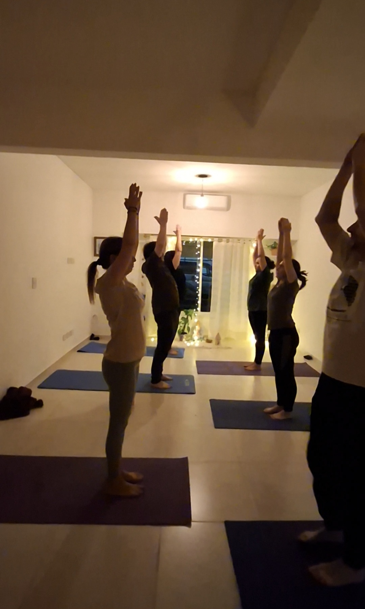
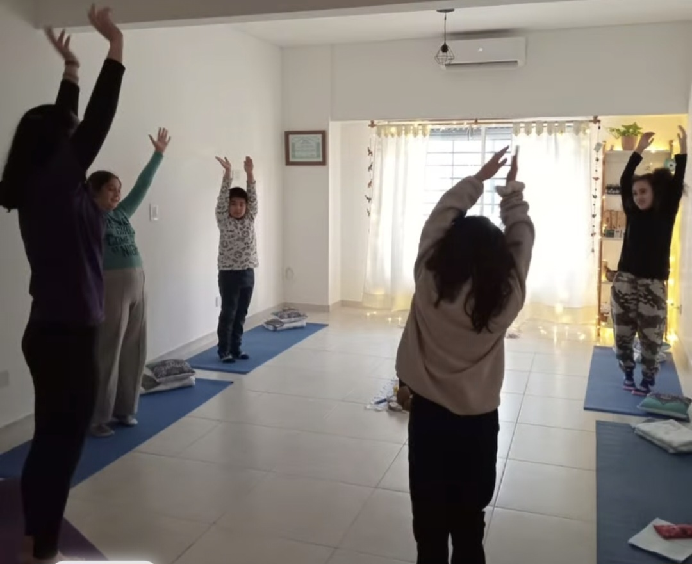
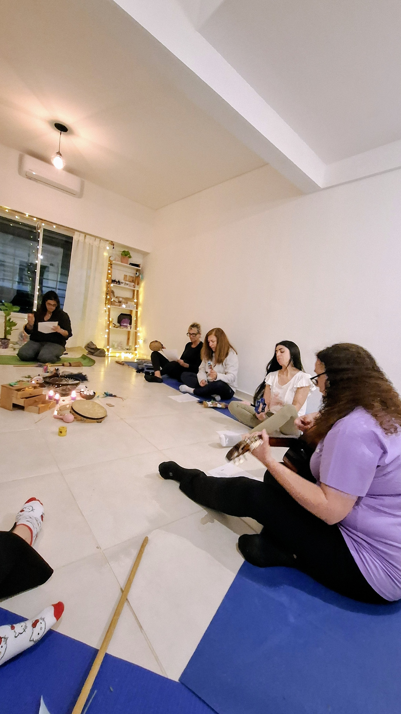

Servicios
Abraza la sanación y la sabiduría interior
FORMACIÓN Y APRENDIZAJE
Formación en Ciencia de la Mente (Certificación Internacional - CSL, EE.UU.)
Un camino de evolución espiritual que te enseñará a transformar tu vida desde la mente, integrar principios metafísicos y, si lo deseás, formarte como guía espiritual. Se cursa por niveles, cada uno con certificación internacional:
Fundamentos de Ciencia de la Mente: la base de toda la enseñanza. Podrás explorar cómo tus pensamientos crean tu experiencia y entenderás cómo aplicar los principios espirituales en tu vida diaria.
Tratamiento Espiritual y Meditación: aprenderás a usar el Tratamiento Espiritual Científico y la meditación como herramientas de transformación.
Dominio de mi Propio Ser: un curso profundo para reconocer y liberar patrones limitantes, y asumir tu poder interior.
Exploración de las Enseñanzas de Ernest Holmes: un recorrido por la obra original del fundador de Ciencia de la Mente.
Cinco regalos para una vida abundante: un recorrido simple y poderoso para integrar cinco claves espirituales que despiertan la abundancia en todas las áreas de tu vida.
Raíces: un curso que te introduce en las raíces de Ciencia de la Mente, brindándote la base sólida para comprender y aplicar sus principios en tu vida cotidiana.
Entrenamiento hacia la Licenciatura (Practitioner Training)
Para quienes desean ejercer como Practitioners licenciados/as:
Practitioner I:
Vivir la Filosofía: Integrás profundamente la enseñanza en tu vida cotidiana.
Practitioner II:
Servicio Espiritual Aprendés a acompañar procesos individuales con Tratamiento Espiritual, sosteniendo espacios de sanación y claridad.
Al finalizar ambos niveles, se accede a la Licencia Internacional como Practitioner Certificado/a.
Talleres de Transformación Personal (no certificados)
Espacios vivenciales para el crecimiento interior, la sanación emocional y la expansión de conciencia. Cada taller aborda un tema clave desde una mirada espiritual y práctica:
- Cambios: una oportunidad para crecer.
- Los Cuatro Acuerdos (basado en el libro de Don Miguel Ruiz).
- 5 Regalos para una vida abundante.
- Me amo, te amo... creando relaciones saludables y perdurables.
- Ámate y atraé lo mejor a tu vida.
CLASES PRÁCTICAS DE YOGA

Clases de Yoga Dinámico
Prácticas conscientes que trabajan cuerpo, mente y energía. A través del movimiento fluido, la respiración y la presencia, liberamos tensiones y cultivamos bienestar integral. Modalidad: presencial y virtual.
Clases de Yoga Nidra
Una meditación guiada profunda que te lleva a un estado de relajación total, ideal para calmar la mente, conectar con tu mundo interno y activar el poder creador de la conciencia.

Clases de Yoga para Niños
Talleres mensuales que fortalecen la autoestima, la confianza y la autorregulación emocional a través de yoga, juegos conscientes, meditación, cantos de mantras y armonización sonora.
TERAPIAS HOLÍSTICAS
Asesorías Espirituales (Sesiones Uno a Uno)
Encuentros personalizados donde te acompaño a ver con claridad, soltar bloqueos y reconectar con tu guía interior. Un espacio de contención y verdad.
Terapia Floral (Sistema Bach)
Acompañamiento emocional con esencias florales que armonizan tu mundo interno. Ideal para gestionar emociones, liberar patrones limitantes y recuperar el equilibrio natural.
Sesiones de Armonización Reiki y Sonora
Un espacio de sanación energética combinando Reiki y cuencos tibetanos. Ideal para liberar tensiones, armonizar los centros energéticos y reconectar con tu paz interior.
RITUALES Y ESPACIOS SAGRADOS
Círculos Sagrados Femeninos
Encuentros mensuales donde honramos lo femenino a través de rituales, meditación, cantos, conexión con los arquetipos, fases lunares y sabiduría ancestral. Un espacio de transformación, hermandad y despertar del poder interior.

Productos
Abraza la sanación y la sabiduría interior